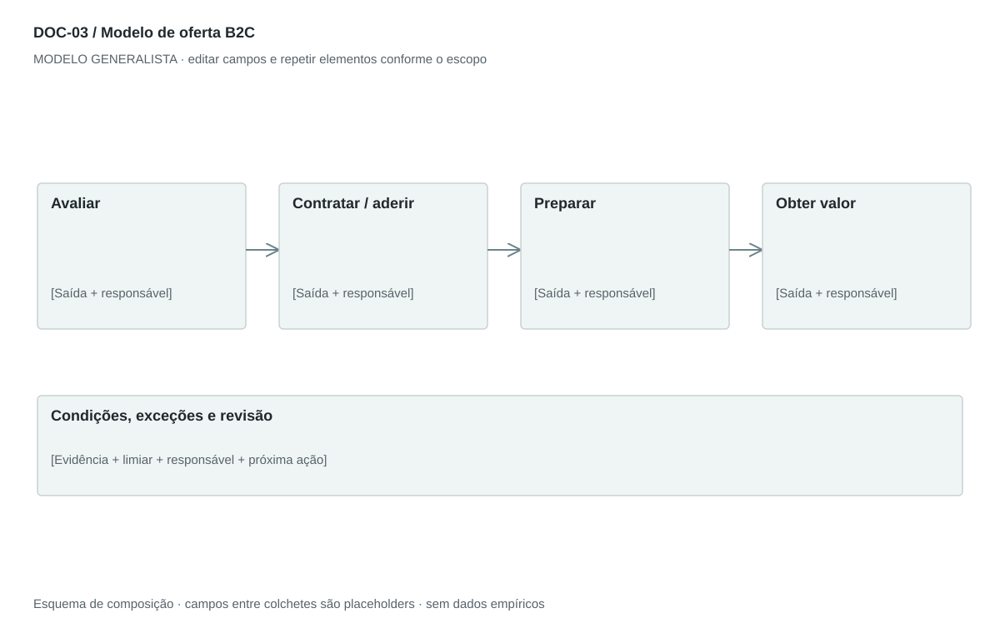

DOC-03 / Biblioteca documental generalista
Modelo de oferta B2C
Descrever como uma pessoa acessa, começa, usa e encerra uma oferta, com custos e exceções claros.
Modelo de investigação. Não representa uma análise concluída. Campos vazios devem permanecer identificados; não inventar dados para completar figuras.
Estrutura editorial
2–3 páginas retrato; jornada de uso curta e quadro destacado de custos e requisitos. Substituir termos técnicos por ações compreensíveis.
Visual previsto

Conhecer → aderir/comprar → preparar → usar → receber confirmação → obter ajuda. Remover etapas não aplicáveis.
Imagens: Sequência com ícones ou ilustrações de ações; fotos reais opcionais de uso. Não pressupor aplicativo, cadastro, pagamento digital ou biometria.
Dicionário de dados
| Campo | Tipo | Dado necessário |
|---|
| usuario | referencia | Pessoa ou papel beneficiário |
| necessidade | texto | Tarefa ou resultado buscado |
| acesso | texto | Canal de adesão, compra ou atendimento |
| passo | texto | Ação executável e seu resultado |
| custo | decimal | Valor cobrado; null significa desconhecido, zero só se confirmado |
| condicao | texto | Requisito, restrição ou política aprovada |
| excecao | texto | Falha previsível e alternativa |
| canal_ajuda | texto | Como a pessoa resolve dúvidas ou encerra o uso |
Todos os registros precisam de classificação, fonte, localização, datas, confiança e limitação. Números também precisam de unidade, moeda quando aplicável e período.
Modelo preenchível
Os quadros amarelos podem ser editados nesta página para impressão. Edições não são gravadas automaticamente: use o Markdown/JSON para manter uma versão ou imprima em PDF após editar.
[Negócio] · [Versão] · [Data-base] · [Autor] · [Audiência] · [Território]
Pergunta decisória: [A preencher]
Escopo: [A preencher]
1. Para quem e para qual necessidade
Defina usuário e contexto. Diferencie pessoa que usa de pessoa que paga, quando necessário.
[Análise + evidência + implicação + lacuna]
2. Acesso e primeiro uso
Explique descoberta, compra ou adesão, preparação e primeira obtenção de valor.
[Análise + evidência + implicação + lacuna]
3. Condições de uso e custos
Requisitos, cobranças, restrições, cancelamento e alternativas. Use apenas políticas aprovadas.
[Análise + evidência + implicação + lacuna]
4. Uso recorrente
Descreva ações centrais, retorno esperado e confirmação de conclusão.
[Análise + evidência + implicação + lacuna]
5. Falhas e recuperação
Oriente o que fazer se o caminho principal falhar e como obter ajuda.
[Análise + evidência + implicação + lacuna]
6. Benefícios e próximo passo
Apresente o resultado esperado com seus limites e a ação seguinte.
[Análise + evidência + implicação + lacuna]
Decisão e próximo passo
[Decisão e justificativa]
[Alternativa considerada]
[Condição de reversão]
[Ação, responsável, prazo e critério]
Fontes e limites
[Fonte + localização + datas + o que sustenta + limitações]
Critérios de revisão
- Nenhuma promessa absoluta de segurança, velocidade ou disponibilidade.
- Custo zero é distinto de custo desconhecido.
- Cancelamento e falhas têm caminho definido.
Estudo do arquivo original
DOC-03-fonte.pdf — Duas páginas retrato. Registro, termos de uso, opções do aplicativo, ativação e uso com listas de três níveis. Benefícios fecham o documento. Regras de exceção aparecem antes da ativação. O texto pressupõe app, cadastro e autenticação, que não são universais.
Observação do original e adaptação recomendada são camadas distintas. Nomes, preços, localidades, contatos e conclusões do caso-fonte não devem preencher a nova análise.